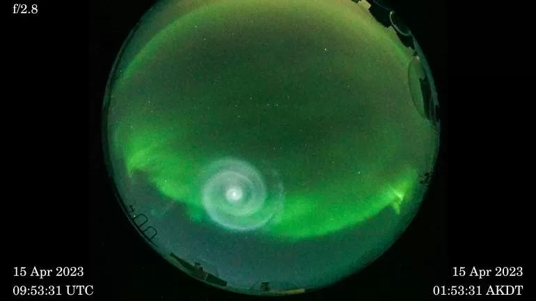

Notícias Cidade
Notícias na Ciência
Os vírus de milhões de anos que podem ajudar no combate e prevenção ao câncer
Vestígios de vírus antigos - que passaram milhões de anos "escondidos" no DNA humano - ajudam o corpo a combater o câncer.
Essa foi a conclusão de um estudo conduzido por cientistas do Instituto Francis Crick que mostrou que resquícios adormecidos desses micro-organismos são despertados quando as células cancerígenas fogem do controle do corpo.
Ciência
-

Aurora Boreal
As misteriosas espirais de luz que surgiram na aurora boreal do Alasca
-

Amazônia
Amazônia previne 15 milhões de casos de doenças por ano, conclui estudo.
-
Espaço
Cientistas detectam explosão de raios gama mais brilhante já vista no espaço
-
Gripe Aviária
Por que o vírus H5N1 preocupa cientistas e pode causar próxima pandemia